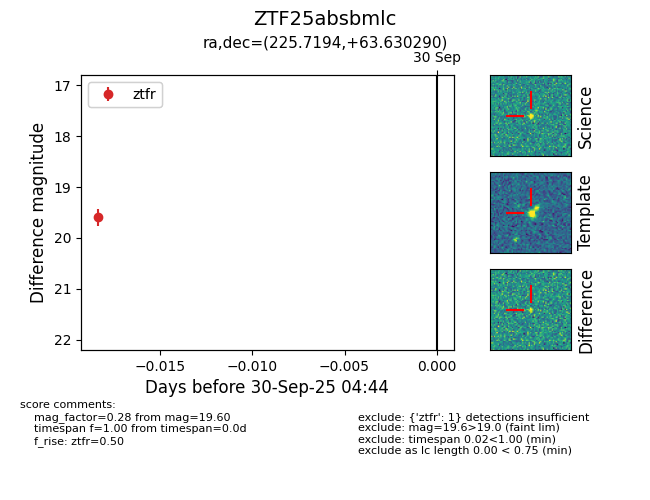

FINK: ZTF25absbmlc
Lasair: ZTF25absbmlc
ALeRCE: ZTF25absbmlc
ZTF25absbmlc (ztf,fink)
equatorial (ra, dec) = (225.7194,+63.63029)
galactic (l, b) = (101.9148,+47.78152)

last ztfr=19.60
1 ztfr detections